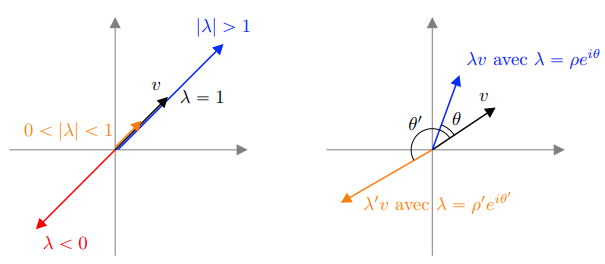
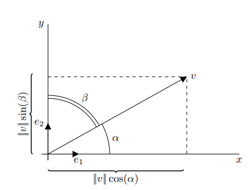
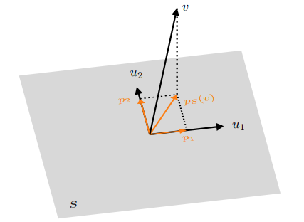
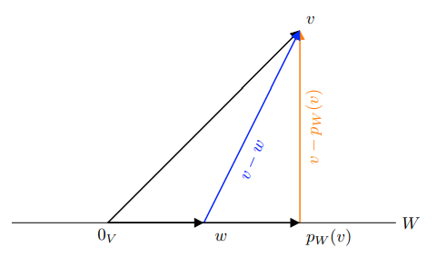
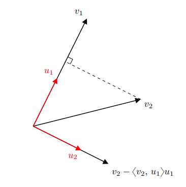

#
Responsable : Jonathan Vacher (jonathan.vacher@u-paris.fr)
Contributeurs/contributrices : E. Provenzi, C. Sutour, E. Luçon, Q. Denoyelle.
1 Applications Linéaires et Matrices
On considère dans cette section que $ V $ et $ W $ sont des $ \mathbb{K} $-espaces vectoriels de dimensions finies respectives $ d \in \mathbb{N}^{\star} $ et $ d^{\prime} \in \mathbb{N}^{\star} $. De plus, on note respectivement $ \mathcal{V} = {v_{1}, \ldots, v_{d}} $ et $ \mathcal{W} = {w_{1}, \ldots, w_{d^{\prime}}} $ des bases de $ V $ et $ W $.
1.1 Matrices et Vecteurs
Proposition 1 (Pourquoi les Vecteurs?). Soit $ v \in V $. Il existe un unique $ d $-uplet $ (\alpha_{1}, \ldots, \alpha_{d}) \in \mathbb{K}^{d} $ tel que
\[v = \sum_{i=1}^{d} \alpha_{i} v_{i}\]Démonstration. Voir cours manuscrit.
La proposition suivante justifie la définition de la notion de vecteur colonne ou ligne pour exprimer un vecteur d’un espace vectoriel étant donné une base.
Définition 1 (Vecteur Colonne ou Ligne). Soit $ v \in V $. Le vecteur colonne (resp. ligne) associé à $ v $ est
\[\operatorname{Vec}_{\mathcal{V}}(v) = \overset{v}{\overbrace{ \begin{pmatrix} \alpha_{1} \\ \alpha_{2} \\ \vdots \\ \alpha_{d} \end{pmatrix} }} \begin{cases} \rightarrow v_{1} & \\ \rightarrow v_{2} & \\ \vdots & \\ \rightarrow v_{d} \end{cases} \in \mathcal{M}_{d, 1}(\mathbb{K}) \quad \left(\text{resp.} \quad \operatorname{Vec}_{\mathcal{V}}(v) = (\alpha_{1}, \ldots, \alpha_{d}) \in \mathcal{M}_{1, d}(\mathbb{K})\right)\]où $ v = \sum_{i=1}^{d} \alpha_{i} v_{i} $.
Remarque 1. Dans ce cours on adoptera la convention vecteur colonne et on confondra $ v $ et $ \operatorname{Vec}{\mathcal{V}}(v) $ lorsqu’il n’y aura pas d’ambiguïté sur la base utilisée (i.e. elle aura été préalablement définie). Autrement, on identifiera les $ \mathbb{K} $-espaces vectoriels $ V $ et $ \mathcal{M}{d, 1}(\mathbb{K}) $.
Définition 2 (Application Linéaire). Une application $ f: V \longrightarrow W $ est linéaire ssi pour tout $ (u, v) \in V^{2} $ et pour tout $ \alpha \in \mathbb{K} $,
\[f(\alpha u + v) = \alpha f(u) + f(v)\]Autrement dit, l’image d’une combinaison linéaire de vecteurs est la combinaison linéaire des vecteurs images. On note l’ensemble des applications linéaires $ \mathcal{L}_{\mathbb{K}}(V, W) $.
Proposition 2 (Pourquoi les Matrices?). Une application linéaire est entièrement définie (de manière unique) par les images de la base $ \mathcal{V} $ exprimées dans la base $ \mathcal{W} $.
Démonstration. Voir cours manuscrit.
La proposition précédente justifie la définition et l’utilisation de matrices étant données des bases des espaces de départ et d’arrivée. En effet, celle-ci exprime que les coefficients $ (a_{i, j})_{(i, j) \in {1, \ldots, d} \times {1, \ldots, d^{\prime}}} $ déterminent de manière unique l’application linéaire $ f $ dans les bases des espaces de départ et d’arrivée.
Définition 3 (Matrice d’une Application Linéaire). Soit $ f \in \mathcal{L}_{\mathbb{K}}(V, W) $. La matrice de $ f $ relativement aux bases $ \mathcal{V} $ et $ \mathcal{W} $ est
\[\operatorname{Mat}_{\mathcal{V}, \mathcal{W}}(f) = \overset{ \begin{array}{ccccccc} f(v_{1}) & f(v_{2}) & \ldots & f(v_{d}) \\ \end{array} }{\overbrace{ \left(\begin{array}{ccccccc} a_{11} & a_{12} & \ldots & a_{1 d} \\ a_{21} & a_{22} & \ldots & a_{2 d} \\ \vdots & \vdots & \ddots & \vdots \\ a_{d^{\prime} 1} & a_{d^{\prime} 2} & \ldots & a_{d^{\prime} d} \end{array}\right) }} \left\{ \begin{array}{c} \rightarrow w_{1} \\ \rightarrow w_{2} \\ \vdots \\ \rightarrow w_{d^{\prime}} \end{array} \in \mathcal{M}_{d, d^{\prime}}(\mathbb{K})\right.\]où pour tout $ j \in {1, \ldots, d}, f(v_{j}) = \sum_{i=1}^{d^{\prime}} a_{i, j} w_{i} $.
On rappelle maintenant les notions de produits matriciels et de produit matrice-vecteur. On se restreint ici au cas des matrices carrées ou des endomorphismes (i.e. des applications linéaires ayant les mêmes espaces vectoriels au départ et à l’arrivée) mais ces notions sont bien définies pour des matrices rectangulaires ou les applications linéaires en général.
Définition 4 (Produit de Matrices et Produit Matrice-Vecteur). Soit $ (A, B) \in \mathcal{M}{d}(\mathbb{K})^{2} $ et $ v \in \mathcal{M}{d, 1}(\mathbb{K}) $. La matrice produit $ C = AB $ et le vecteur $ w = Av $ ont pour coefficients pour tout $ (i, j) \in {1, \ldots, d}^{2} $,
\[c_{i, j} = \sum_{k=1}^{d} a_{i, k} b_{k, j} \quad \text{et} \quad w_{i} = \sum_{k=1}^{d} a_{i, k} v_{k}\]Le produit matriciel correspond à la composition des applications linéaires. Le produit matrice-vecteur correspond au calcul de l’image de ce vecteur par l’application linéaire représentée par la matrice en question. Si $ A $ et $ B $ sont les matrices des endomorphismes $ f $ et $ g $ dans la base $ \mathcal{V} $ et $ v $ un vecteur (en identifiant $ v $ et $ \operatorname{Vec}_{\mathcal{V}}(v) $) alors
\[f \circ g \longleftrightarrow AB \quad \text{et} \quad f(v) \longleftrightarrow Av\]1.2 Changement de Bases
Définition 5 (Matrice de Changement de Base). Soit $ \mathcal{V}^{\prime} $ une base de $ V $. On peut exprimer les vecteurs de la nouvelle base $ \mathcal{V}^{\prime} $ dans l’ancienne base $ \mathcal{V} $, pour tout $ j \in {1, \ldots, d} $, il existe $ (p_{1, j}, \ldots, p_{d, j}) \in \mathbb{K}^{d} $ tels que $ v_{j}^{\prime} = \sum_{i=1}^{d} p_{i, j} v_{i} $. La matrice de passage de $ \mathcal{V} $ à $ \mathcal{V}^{\prime} $ est
\[P = \operatorname{Mat}(\mathcal{V}, \mathcal{V}') = \overset{ \begin{array}{ccccccc} v_{1}^{\prime} & v_{2}^{\prime} & \ldots & v_{d}^{\prime} \\ \end{array} }{\overbrace{ \left(\begin{array}{ccccccc} p_{11} & p_{12} & \ldots & p_{1d} \\ p_{21} & p_{22} & \ldots & p_{2d} \\ \vdots & \vdots & \ddots & \vdots \\ p_{d1} & p_{d2} & \ldots & p_{dd} \end{array}\right) }} \left\{\begin{array}{c} \rightarrow v_{1} \\ \rightarrow v_{2} \\ \vdots \\ \rightarrow v_{d} \end{array} \in \mathcal{M}_{d}(\mathbb{K})\right.\]Proposition 3. Soit $ \mathcal{V}^{\prime} $ une base de $ V $ et $ P \in \mathcal{M}_{d}(\mathbb{K}) $ la matrice de passage de $ \mathcal{V} $ à $ \mathcal{V}^{\prime} $ alors $ P \in \mathcal{G} \mathcal{L}(\mathbb{K}) $ (ensemble des matrices inversibles) et $ P^{-1} $ est la matrice de passage de $ \mathcal{V}^{\prime} $ à $ \mathcal{V} $.
Démonstration. Voir cours manuscrit.
Proposition 4 (Formules de Changement de Bases). Soit $ \mathcal{V}^{\prime} $ une base de $ V, (A, v) \in \mathcal{M}{d}(\mathbb{K}) \times \mathcal{M}{d, 1}(\mathbb{K}) $ une matrice et un vecteur exprimés dans la base $ \mathcal{V} $ et $ P \in \mathcal{M}_{d}(\mathbb{K}) $ la matrice de passage de $ \mathcal{V} $ à $ \mathcal{V}^{\prime} $. Alors la matrice $ A^{\prime} $ et le vecteur $ v^{\prime} $ exprimés dans la base $ \mathcal{V}^{\prime} $ vérifient
\[A = P A^{\prime} P^{-1} \quad \text{et} \quad v = P v^{\prime}\]Définition 6 (Matrices Semblables). Deux matrices $ (A, B) \in \mathcal{M}{d}(\mathbb{K})^{2} $ sont semblables si elles représentent le même endomorphisme dans des bases différentes i.e. s’il existe $ P \in \mathcal{G} \mathcal{L}{d}(\mathbb{K}) $ tel que $ A = P B P^{-1} $.
1.3 Réduction des Endormorphismes et Diagonalisation des Matrices
Définition 7 (Vecteur et Valeurs Propres). Soit $ f \in \mathcal{L}{\mathbb{K}}(V) $ un endomorphisme (resp. $ A \in \mathcal{M}{d}(\mathbb{K}) $ une matrice). Un vecteur $ v \in V $, non nul, est un vecteur propre de $ f $ (resp. $ A $) associé à la valeur propre $ \lambda \in \mathbb{K} $ ssi $ f(v) = \lambda v $ (resp. $ Av = \lambda v $). On note $ \operatorname{Spec}(f) $ (resp. $ \operatorname{Spec}(A) $) l’ensemble des valeurs propres de $ f $ (resp. $ A $).
| Remarque 2 (Interprétation Géométrique). Si $ v \in V $ est un vecteur propre de $ f $ associé à la valeur propre $ \lambda \in \mathbb{R} $ alors l’action de $ f $ sur $ v $ est la simple multiplication scalaire i.e. c’est une homothétie). En particulier, $ v $ est tout simplement dilaté (si $ | \lambda | > 1 $), comprimé (si $ | \lambda | < 1 $), retourné (si $ \lambda < 0 $), ou laissé fixe ($ \lambda = 1 $). |
Si $ v \in V $ est une valeur propre de $ f $ associée à la valeur propre $ \lambda \in \mathbb{C} $ alors l’action de $ f $ sur $ v $ est la multiplication par un nombre complexe $ \rho e^{i \theta} $ avec $ (\rho, \theta) \in \mathbb{R}_{+} \times [0, 2\pi[ $ i.e. c’est la composée d’une rotation d’angle $ \theta $ et d’une homothétie de facteur $ \rho $.

Figure 1. Illustration des transformations particulières qu’opère une application linéaire sur ses vecteurs propres. À gauche : valeurs propres réelles. À droite : valeurs propres complexes.
Définition 8 (Réduction d’un Endormorphisme). Un endomorphisme $ f \in \mathcal{L}{\mathbb{K}}(V) $ (resp. une matrice $ A \in \mathcal{M}{d}(\mathbb{K}) $) est réductible/diagonalisable ssi il existe une base de vecteurs propres (resp. ssi elle est semblable à une matrice diagonale).
Théorème 1. Un endomorphisme $ f \in \mathcal{L}{\mathbb{K}}(V) $ est réductible/diagonalisable ssi sa matrice représentative $ \operatorname{Mat}{V}(f) $ dans une base $ \mathcal{V} $ est diagonalisable.
2 Espaces Vectoriels Euclidiens et Hermitiens
2.1 Espace Euclidien : Espace Vectoriel Réel Muni d’un Produit scalaire
On considère dans cette section un espace vectoriel $ V $ sur le corps des réels $ \mathbb{R} $.
Définition 9 (Produit Scalaire sur $ \mathbb{R} $). L’application $ b: V \times V \longrightarrow \mathbb{R} $ est un produit scalaire ssi elle est : (i) bilinéaire, i.e. linéaire relativement à chaque argument (l’autre étant fixé) : pour tout $ (v_{1}, v_{2}, w_{1}, w_{2}) \in V^{4}, (\alpha, \beta) \in \mathbb{R}^{2} $,
\[\begin{gathered} b(\alpha v_{1} + v_{2}, w_{1}) = \alpha b(v_{1}, w_{1}) + b(v_{2}, w_{1}) \\ b(v_{1}, \beta w_{1} + w_{2}) = \beta b(v_{1}, w_{1}) + b(v_{1}, w_{2}) \end{gathered}\](ii) symétrique : pour tout $ v, w \in V, b(v, w) = b(w, v) $; (iii) définie positive : pour tout $ v \in V $,
\[\left\{\begin{array}{l} b(v, v) \geqslant 0 \\ b(v, v) = 0 \Longrightarrow v = 0_{V} \end{array}\right.\]Lorsqu’une application $ b: V \times V \longrightarrow \mathbb{R} $ est un produit scalaire on la note généralement pour tout $ (v, w) \in V^{2}, b(v, w) = \langle v, w \rangle $. On trouvera également la notation $ b(v, w) = v \cdot w $ ou encore $ b(v, w) = v^{t} w $ lorsque l’on considère $ v $ et $ w $ comme des vecteurs colonnes (avec $ \cdot^{t} $ représente la transposition).
Définition 10 (Espace Euclidien). Supposons que $ V $ est un espace vectoriel réel de dimension finie $ n < +\infty $ et $ \langle \cdot, \cdot \rangle: V \times V \longrightarrow \mathbb{R} $ un produit scalaire. On dit alors que le couple $ (V, \langle \cdot, \cdot \rangle) $ (ou tout simplement $ V $) est un espace euclidien.
Exemple 1. L’exemple le plus important d’espace vectoriel avec produit scalaire réel est $ \mathbb{R}^{n} $, muni du produit scalaire Euclidien. Pour tout $ v = (v_{1}, v_{2}, \ldots, v_{n}), w = (w_{1}, w_{2}, \ldots, w_{n}) $ deux vecteurs de $ \mathbb{R}^{n} $ écrits dans la base canonique, le produit scalaire Euclidien entre $ v $ et $ w $ est
\[\langle v, w \rangle \equiv \sum_{i=1}^{n} v_{i} w_{i}\]2.2 Espace Hermitien : Espace Vectoriel Complexe Muni d’un Produit scalaire
On considère dans ce paragraphe un espace vectoriel $ V $ sur le corps des complexes $ \mathbb{C} $ (i.e. les scalaires sont des nombres complexes!). La définition du produit scalaire dans des espaces vectoriels complexes requiert quelques modifications et ce pour au moins deux raisons : (i) La notion de bilinéarité (sur le corps de complexes) ne permet pas d’avoir des applications qui soient définies positives. En effet, si $ b $ est bilinéaire définie positive alors pour $ (v, w) \in V^{2} $ on a $ 0 \leqslant b(i v, i w) = i^{2} b(v, w) = -b(v, w) \leqslant 0 $ car $ b(v, w) \geqslant 0 $. Ainsi la seule application bilinéaire définie positive est l’application nulle sur $ V^{2} $. Pour obtenir une notion plus riche d’applications définies positives on choisit de modifier légèrement la notion de bilinéarité en introduisant la notion d’antilinéarité.
Définition 11 (Antilinéarité). Une application $ f: V \rightarrow \mathbb{C} $ est antilinéaire ssi pour tout $ v, w \in V, \alpha \in \mathbb{C}, f(v + w) = f(v) + f(w) $ et $ f(\alpha v) = \bar{\alpha} f(v) $, où $ \bar{\alpha} $ est le conjugué de $ \alpha $.
La notion d’antilinéarité permet ensuite de définir la notion de sesquilinéarité comme il suit.
Définition 12 (Sesquilinéarité). Une application $ b: V \times V \rightarrow \mathbb{C} $ est sesquilinéaire ssi elle est linéaire en sa première variable et antilinéaire en sa seconde variable (ou vice-versa mais on adoptera la convention choisie dans la présente définition, voir la remarque 3). (ii) Cette nouvelle notion de sesquilinéarité nous pousse à modifier la notion de symétrie. En effet, pour une application $ b $ sesquilinéaire et symétrique on a pour tout $ v \in V, -il b(v, v) = b(v, i v) = b(i v, v) = i b(v, v) $ et donc lorsque $ b(v, v) \neq 0, 1 = -1 $ ce qui est impossible. On remplace donc la notion de symétrie par la notion de symétrie Hermitienne définie comme il suit.
Définition 13 (Symétrie Hermitienne). Une application $ b: V \times V \rightarrow \mathbb{C} $ est à symétrie Hermitienne (ou Hermitienne) ssi pour tout $ (v, w) \in V^{2}, b(v, w) = \overline{b(w, v)} $.
Remarque 3. Le choix de la variable linéaire et antilinéaire est totalement arbitraire. L’antilinéarité relative à la deuxième variable est la convention utilisée parmi les mathématiciens, tandis que l’antilinéarité relative à la première variable est la convention typiquement adoptée parmi les physiciens. Pour uniformiser la notation, on considérera dorénavant toujours la convention utilisée par les mathématiciens, i.e. $ \langle \alpha v, \beta w \rangle = \alpha \beta^{*} \langle v, w \rangle $.
Ces observations conduisent à définir un produit scalaire sur un espace vectoriel complexe de la manière suivante.
Définition 14. L’application $ b: V \times V \longrightarrow \mathbb{C} $ est un produit scalaire ssi elle est : (i) sesquilinéaire, i.e. linéaire en la $ 1^{\text{ère}} $ variable et antilinéaire en la $ 2^{\text{nd}} $ : pour tout $ (v_{1}, v_{2}, w_{1}, w_{2}) \in V^{4}, (\alpha, \beta) \in \mathbb{C}^{2} $,
\[\begin{aligned} b(\alpha v_{1} + v_{2}, w_{1}) & = \alpha b(v_{1}, w_{1}) + b(v_{2}, w_{1}) \\ b(v_{1}, \beta w_{1} + w_{2}) & = \bar{\beta} b(v_{1}, w_{1}) + b(v_{1}, w_{2}) \end{aligned}\](ii) Hermitienne : pour tout $ v, w \in V, b(v, w) = \overline{b(w, v)} $;
(iii) définie positive : pour tout $ v \in V $,
\[\left\{\begin{array}{l} b(v, v) \geqslant 0 \\ b(v, v) = 0 \Longrightarrow v = 0_{V}, \text{ le vecteur nul de l'espace vectoriel } V \end{array}\right.\]- Sesqui vient du latin semisque, qui veut dire une fois et demi, on utilise cette nomenclature pour souligner qu’on n’a pas deux fois la linéarité, mais une fois « et demi », dit à la présence de la conjugaison complexe. 2. Charles Hermite, mathématicien français, 1822 Dieuze - 1901 Paris.
Remarque 4. La symétrie Hermitienne de $ b $ assure que pour tout $ v \in V, b(v, v) = \overline{b(v, v)} $ et donc que $ b(v, v) \in \mathbb{R} $.
Définition 15 (Espace Hermitien). Supposons que $ V $ est un espace vectoriel complexe de dimension finie $ n < +\infty $ et $ \langle \cdot, \cdot \rangle: V \times V \longrightarrow \mathbb{C} $ un produit scalaire. On dit alors que le couple $ (V, \langle \cdot, \cdot \rangle) $ (ou tout simplement $ V $) est un espace hermitien.
Exemple 2. L’exemple classique d’espace vectoriel Hermitien est $ (\mathbb{C}^{n}, \langle \cdot, \cdot \rangle) $, où $ \langle \cdot, \cdot \rangle $ est le produit scalaire Hermitien défini ainsi pour tout $ v = (v_{1}, v_{2}, \ldots, v_{n}), w = (w_{1}, w_{2}, \ldots, w_{n}) $ deux vecteurs de $ \mathbb{C}^{n} $ écrits dans la base canonique,
\[\langle v, w \rangle = \sum_{i=1}^{n} v_{i} \bar{w}_{i}\]3 Norme Associée à un Produit Scalaire
Définition 16 (Norme). Une application $ N: V \rightarrow \mathbb{R} $ est une norme ssi pour tout $ (v, w) \in V^{2} $, et $ \alpha \in \mathbb{K} = \mathbb{R} $ ou $ \mathbb{C} $, (i) $ N(v) = 0 \Leftrightarrow v = 0_{V} $, (ii) $ N(\alpha v) = |\alpha| N(v) $, (iii) $ N(v + w) \leqslant N(v) + N(w) $ (Inégalité Triangulaire).
Définition 17 (Espace normé). Soit $ V $ un espace vectoriel et $ |\cdot| $ une norme définie sur $ V $. On dit que le couple $ (V, |\cdot|) $ (ou tout simplement $ V $) est un espace normé.
Proposition 5. Soit $ (V, \langle \cdot, \cdot \rangle) $ un espace Euclidien ou Hermitien. On définit l’application suivante
\[\| \cdot \| \quad : \begin{aligned} \quad & V \to \mathbb{R} \\ v & \quad \mapsto \quad \sqrt{\langle v, v \rangle}. \end{aligned}\]Alors $ (V, |\cdot|) $ est un espace normé. On note que $ N(v) $ est bien défini car $ \langle v, v \rangle \geqslant 0 $.
Proposition 6 (Inégalité de Cauchy-Schwarz). Pour tout $ (v, w) \in V^{2}, |\langle v, w \rangle| \leqslant |v| |w| $.
Démonstration. Voir cours manuscrit.
Remarque 5. Un vecteur $ v \in V $ tel que $ |v| = 1 $ est un vecteur dit unitaire ou normé.
Exemple 3 (Exemples remarquables). Les normes sur les espaces Euclidien $ (\mathbb{R}^{n}, \langle \cdot, \cdot \rangle) $ et Hermitien $ (\mathbb{C}^{n}, \langle \cdot, \cdot \rangle) $ canoniques sont respectivement
\[\begin{aligned} & \|v\| = \sqrt{\sum_{i=1}^{n} v_{i}^{2}} \\ & \text{et} \|v\| = \sqrt{\sum_{i=1}^{n} v_{i} v_{i}^{*}} = \sqrt{\sum_{i=1}^{n} |v_{i}|^{2}} \end{aligned}\]où, pour tout $ z \in \mathbb{C}, z z^{*} = |z|^{2} $, où, si $ z = a + i b, a, b \in \mathbb{R}, |z| = \sqrt{a^{2} + b^{2}} $ est le module de $ z $. Un espace vectoriel avec produit scalaire (réel ou complexe) est donc automatiquement aussi un espace vectoriel normé avec la norme engendrée par le produit scalaire. Le contraire, en général, n’est pas vrai.
4 Familles Orthogonales et Orthonormales
En l’absence de précision, on considère dans cette section que $ V $ est un espace vectoriel Euclidien ou Hermitien.
4.1 Définitions et Théorème de Pythagore
Définition 18 (Orthogonalité). Soit $ (u, v) \in V^{2} $. Les vecteurs $ u $ et $ v $ sont orthogonaux ssi $ \langle u, v \rangle = 0 $.
Définition 19. Soit $ p \in \mathbb{N}^{*} $ et $ \mathcal{F} = (v_{1}, \cdots, v_{p}) $ une famille de vecteurs de $ V $. (i) La famille $ \mathcal{F} $ est orthogonale ssi ses vecteurs sont deux à deux orthogonaux i.e.
\[\forall (i, j) \in \{1, \ldots, p\}^{2}, \quad i \neq j \Longrightarrow \left\langle v_{i}, v_{j}\right\rangle = 0 . \quad \left(\text{on note } v_{i} \perp v_{j}\right)\](ii) La famille $ \mathcal{F} $ est orthonormale ssi elle est orthogonale et que tout ses vecteurs sont unitaires (ou normés) i.e.
\[\forall (i, j) \in \{1, \ldots, p\}^{2}, \quad \left\langle v_{i}, v_{j}\right\rangle = \delta_{i, j}\]Le symbole $ \delta_{i, j} $ est le symbole de Kronecker. Par définition
\[\delta_{i, j} \stackrel{\text{def}}{=} \begin{cases} 1 & \text{si } i = j \\ 0 & \text{si } i \neq j \end{cases}\]| Remarque 6. Un vecteur $ v \in V $ non nul peut toujours être normalisé en un vecteur unitaire en le divisant par sa norme. En effet, si $ \hat{v} = v / | v | $ alors |
Théorème 2 (Généralisation du Théorème de Pythagore). Soit $ (v_{1}, \cdots, v_{p}) \in V $ une famille de vecteurs orthogonaux alors
\[\left|\sum_{i=1}^{p} v_{i}\right|^{2} = \sum_{i=1}^{p} \left|v_{i}\right|^{2}\]Démonstration. Voir cours manuscrit.
Théorème 3 (Théorème de Pythagore). Supposons que $ V $ est un espace Euclidien alors pour tout $ (u, v) \in V^{2} $,
\[u \perp v \Longleftrightarrow \|u + v\|^{2} = \|u\|^{2} + \|v\|^{2}\]Démonstration. Voir cours manuscrit.
4.2 Propriétés des Familles Orthogonales, Bases Orthogonales
La condition d’orthogonalité est plus forte que l’indépendance linéaire. En fait, toute famille orthogonale de vecteurs non nuls est libre.
Théorème 4. Soit $ p \in \mathbb{N}^{*} $, et $ \mathcal{F} = {v_{1}, \ldots, v_{p}} $ une famille orthogonale de $ V $. Si les vecteurs de $ \mathcal{F} $ sont tous non nuls alors $ \mathcal{F} $ est une famille libre.
Démonstration. Voir cours manuscrit.
Corollaire 1. On note $ d \in \mathbb{N} $ la dimension de $ V $. Une famille orthogonale de $ d $ vecteurs non nuls forme une base de $ V $.
Démonstration. Voir cours manuscrit.
3. Leopold Kronecker (Liegnitz 1823 - Berlin 1891)
Démonstration. Voir cours manuscrit.
Définition 20 (Définition Tautologique). Soit $ \mathcal{B} $ une famille de vecteurs de $ V $. (i) La famille $ \mathcal{B} $ est une base orthogonale de $ V $ ssi la famille $ \mathcal{B} $ est une base de $ V $ et est orthogonale. (ii) La famille $ \mathcal{B} $ est une base orthonormale de $ V $ ssi la famille $ \mathcal{B} $ est une base de $ V $ et est orthonormale.
Dans une espace vectoriel de dimension $ d \in \mathbb{N} $, déterminer les composantes d’un vecteur par rapport à une base revient en général à résoudre un système linéaire de $ d $ équations avec $ d $ inconnues. La complexité numérique (nombres d’opérations simples à effectuer) de la résolution d’un tel système est $ O(d^{3}) $. Lorsque l’on a une base orthogonale ou orthonormale, les composantes peuvent être déterminées par des produits scalaires, comme le montre le théorème suivant. La complexité de ces calculs est réduite à $ O(d^{2}) $.
Théorème 5. Soit $ \mathcal{B} = {u_{1}, \ldots, u_{d}} $ une base de $ V $. (i) Si $ \mathcal{B} $ est orthogonale alors pour tout $ (v, w) \in V^{2} $, (a) Décomposition sur une base orthogonale
\[v = \sum_{i=1}^{d} \frac{\left\langle v, u_{i}\right\rangle}{\|u_{i}\|^{2}} u_{i}\](b) Identité de Parseval
\[\langle v, w \rangle = \sum_{i=1}^{d} \frac{\left\langle v, u_{i}\right\rangle \left\langle u_{i}, w\right\rangle}{\|u_{i}\|^{2}}\](c) Identité de Plancherel
\[\|v\|^{2} = \sum_{i=1}^{d} \frac{\left(\left\langle v, u_{i}\right\rangle\right)^{2}}{\|u_{i}\|^{2}}\](ii) Si $ \mathcal{B} $ est orthonormale alors pour tout $ (v, w) \in V^{2} $, (a) Décomposition sur une base orthonormale
\[v = \sum_{i=1}^{d} \left\langle v, u_{i}\right\rangle u_{i}\](b) Identité de Parseval
\[\langle v, w \rangle = \sum_{i=1}^{d} \left\langle v, u_{i}\right\rangle \left\langle u_{i}, w\right\rangle\](c) Identité de Plancherel
\[\|v\|^{2} = \sum_{i=1}^{d} \left|\left\langle v, u_{i}\right\rangle\right|^{2}\]Démonstration. Voir cours manuscrit.
Remarque 7 (Interprétation géométrique du théorème). Le théorème 5 est la généralisation du théorème de décomposition d’un vecteur dans les bases canoniques du plan $ \mathbb{R}^{2} $ ou de l’espace $ \mathbb{R}^{3} $ (et plus généralement de $ \mathbb{R}^{d} $). Voir figure 2. Dans l’ensemble le théorème permet de comprendre que lorsque l’on dispose d’une base orthonormale tout se passe comme si on travaillait dans la base canonique. Étant donné l’équation (8), l’identité de Parseval indique que le produit scalaire de deux vecteurs est donné par la somme du produit des coordonnées dans la base orthonormale $ \mathcal{B} $ et l’identité de Plancherel indique que la norme d’un vecteur au carré est la somme des carrés (des modules dans le cas Hermitien) des coordonnées dans la base $ \mathcal{B} $.
4. Marc-Antoine de Parseval des Chésnes (Roisères-aux-Salines 1755, Paris 1836).
5. Michel Plancherel (Bussy 1885 - Zurich 1967).

Figure 2. Représentation graphique du théorème de décomposition sur la base canonique $ {e_{1}, e_{2}} $ de $ \mathbb{R}^{2} $. Le vecteur $ v $ se décompose de la manière suivante $ v = \left\langle v, e_{1}\right\rangle e_{1} + \left\langle v, e_{2}\right\rangle e_{2} = |v| \cos (\alpha) e_{1} + |v| \sin (\alpha) e_{2} $.
4.3 Projection Orthogonale
Définition 21 (Sous-espaces vectoriels orthogonaux). Soient $ U $ et $ W $ deux sous-espaces vectoriels de $ V $. Les sev $ U $ et $ W $ sont orthogonaux ssi pour tout $ (u, w) \in U \times W, \langle u, w \rangle = 0 $. Autrement dit, si tous les vecteurs de chaque sev sont orthogonaux deux-à-deux.
Définition 22 (Projection et projection orthogonale). Soient $ U $ et $ W $ deux sous-espaces vectoriels supplémentaires dans $ V $ (noté $ V = U \oplus W $). La projection linéaire sur $ W $ parallèlement à $ U $ est l’application linéaire suivante
\[\begin{aligned} p_{W}: \begin{array}{lll} V = U \oplus W & \longrightarrow & V \\ v = u + w & \longmapsto & w \end{array} \end{aligned}\]De plus si $ U $ et $ W $ sont des espaces vectoriels orthogonaux (noté $ V = U \stackrel{\perp}{\unrhd} W $) alors la projection $ p_{W} $ est dite orthogonale.
Proposition 7. Soient $ U $ et $ W $ deux sous-espaces vectoriels supplémentaires dans $ V $ et $ p_{w} $ la projection linéaire sur $ W $ parallèlement à $ U $. Alors
- $ \operatorname{Ker}(p_{W}) = U $,
- $ \operatorname{Im}(p_{W}) = W $.
Une projection linéaire est toujours une projection sur son image parallèlement à son noyau. Lorsque la projection est orthogonale, son noyau et son image sont des sev orthogonaux.
Exemple 4. On rappelle que le sous-espace vectoriel de $ V $ engendré par une famille $ \mathcal{F} = {f_{1}, \ldots, f_{n}} $ est
\[\operatorname{Vect}(\mathcal{F}) = \left\{v \in V \mid \exists \alpha_{1}, \ldots, \alpha_{d^{\prime}} \in \mathbb{C} \text{ tels que } v = \sum_{j=1}^{d^{\prime}} \alpha_{j} f_{j}\right\}\]On considère une base orthogonale $ \mathcal{B} = {u_{1}, \ldots, u_{d}} $ de $ V $. Soit $ d^{\prime} \in \mathbb{N}^{\star} $ tel que $ d^{\prime} \leqslant d $. On pose $ \mathcal{B}{0} = {u{1}, \ldots, u_{d^{\prime}}} $ et $ \mathcal{B}{1} = \mathcal{B} \backslash \mathcal{B}{0} $. Et on définit $ W = \operatorname{Vect}(\mathcal{B}{0}) $ et $ U = \operatorname{Vect}(\mathcal{B}{1}) $. La projection sur $ W $ parallèlement à $ U $ est une projection orthogonale. La famille $ \mathcal{B} $ étant une base, le théorème 5 permet d’écrire un vecteur $ v \in V $ de la manière suivante
\[v = \sum_{i=1}^{d} \frac{\left\langle v, u_{i}\right\rangle}{\|u_{i}\|^{2}} u_{i} = u + w \quad \text{avec} \quad u = \sum_{i=1}^{d^{\prime}} \frac{\left\langle v, u_{i}\right\rangle}{\|u_{i}\|^{2}} u_{i} \quad \text{et} \quad w = \sum_{i=d^{\prime}+1}^{d} \frac{\left\langle v, u_{i}\right\rangle}{\|u_{i}\|^{2}} u_{i}\]Ainsi la définition 22 permet d’écrire la projection orthogonale d’un vecteur $ v \in V $ sur $ W $ comme il suit
\[p_{W}(v) = \sum_{i=1}^{d^{\prime}} \frac{\left\langle v, u_{i}\right\rangle}{\|u_{i}\|^{2}} u_{i}\]Le théorème suivant montre que la projection orthogonale définie ci-dessus a toutes les propriétés de la projection orthogonale définie sur $ \mathbb{R}^{2} $ et $ \mathbb{R}^{3} $.
6. ou projecteur orthogonal

Figure 3. Projection orthogonale $ p_{W}(v) $ d’un vecteur de $ \mathbb{R}^{3} $ sur le plan engendré par deux vecteurs unitaires.
Théorème 6. Soient $ U $ et $ W $ deux sous-espaces vectoriels supplémentaires et orthogonaux dans $ V $ et soit $ p_{W} $ la projection linéaire sur $ W $ parallèlement à $ U $. Alors pour tout $ (v, w) \in V \times W $, (i) $ \left\langle v - p_{W}(v), w\right\rangle = 0 \quad \text{i.e.} \quad v - p_{W}(v) \perp W $, (ii) $ \left|v - p_{W}(v)\right| \leqslant |v - w| $ avec égalité si et seulement si $ w = p_{W}(v) $.
Remarque 8. La propriété (ii) dit que, parmi tous les vecteurs de $ W $, le vecteur qui minimise la distance à $ v $ est la projection orthogonale $ p_{W}(v) $. Le théorème 6 est illustré dans la figure 4.

Figure 4. Illustration des propriétés (i) et (ii) du théorème 6 pour une projection sur une droite vectorielle $ W $ du plan $ V = \mathbb{R}^{2} $.
Démonstration. Voir cours manuscrit.
4.4 Le Procédé d’Orthonormalisation de Gram-Schmidt
Les bases orthogonales/orthonormales permettent d’effectuer des projections et d’obtenir les coefficients d’un vecteur dans une base de manière simple. Le théorème suivant dit que, dans un espace vectoriel Euclidien ou Hermitien, on peut toujours construire une famille orthonormale à partir d’une famille libre.
Théorème 7 (Procédé d’Orthonormalisation de Gram-Schmidt). Soit $ p \geqslant 1 $ et $ (v_{1}, \ldots, v_{p}) \in V^{p} $ une famille libre. Alors il existe une famille orthonormée $ (u_{1}, \ldots, u_{p}) \in V^{p} $ (qu’on peut construire explicitement à partir de $ (v_{1}, \ldots, v_{p}) $) qui vérifie $ \operatorname{Vect}{v_{1}, \ldots, v_{p}} = \operatorname{Vect}{u_{1}, \ldots, u_{p}} $.
[^0] [^0]: 7. Jørgen Pedersen Gram (Nustrup 1850 - Copenhagen 1916), Erhard Schmidt (Tatu 1876 - Berlin 1959).

Figure 5. Illustration du procédé d’orthonormalisation de Gram-Schmidt dans le plan $ \mathbb{R}^{2} $.
5 Endomorphismes (et Matrices) sur les Espaces Euclidiens et Hermitiens
Lorsque l’on considère la structure donnée par le produit scalaire, on peut définir une notion importante relative à une application linéaire et à son comportement vis-à-vis du produit scalaire. Il s’agit de la notion d’endomorphisme adjoint. Lorsque l’on considère la matrice de l’endomorphisme cette notion revient à considérer la matrice transposée dans le cas Euclidien ou transposée et conjuguée dans le cas Hermitien.
Définition 23 (Endomorphisme Adjoint). Soit $ f \in \mathcal{L}(V) $. L’endomorphisme $ f^{\star} $ est l’adjoint de $ f $ ssi il vérifie pour tout $ (v, w) \in V^{2} $
\[\langle f(v), w \rangle = \left\langle v, f^{\star}(w)\right\rangle\]Remarque 9. Le théorème de représentation de Riesz garantit l’existence d’un unique endomorphisme adjoint et donc la validité de cette définition. Notons de plus que $ (f^{\star})^{\star} = f $.
Une propriété importante de l’adjoint $ f^{\star} $ de $ f $ est qu’il stabilise le supplémentaire orthogonal des espaces vectoriels stables par $ f $. Formellement, on a la définition et la proposition suivante.
Définition 24 (Espaces Vectoriels Stables). Un sev $ U $ de $ V $ est stable par un endomorphisme $ f \in \mathcal{L}(V) $ ssi pour tout $ u \in U, f(u) \in U $ (ceci s’écrit aussi $ f(U) \subset U $).
Proposition 8 (Stabilité du Supplémentaire Orthogonal par l’Adjoint). Soit $ f \in \mathcal{L}(V) $ un endomorphisme et $ U $ un sev de $ V $. Le sev $ U $ est stable par $ f $ ssi $ U^{\perp} $ est stable par $ f^{\star} $.
Démonstration. Voir cours manuscrit.
Ici, on va considérer deux classes importantes d’applications linéaires : (i) celles qui conservent le produit scalaire entre vecteurs. On montrera que leur inverse est égale à leur adjoint. On parle d’isométrie dans le cas Euclidien et d’endomorphisme unitaire dans le cas Hermitien. (ii) celles qui sont égales à leur adjoint. On parle d’endomorphisme symmétrique dans le cas Euclidien et d’endomorphisme Hermitien dans le cas Hermitien. En l’absence de précision, on considère dans cette section que $ V $ est un espace vectoriel Euclidien ou Hermitien.
5.1 Endomorphismes Isométriques / Unitaires et Matrices Orthogonales / Unitaires
Définition 25 (Endomorphismes Isométrique/Unitaire). Soit $ f \in \mathcal{L}(V) $. L’application linéaire $ f $ est une isométrie (resp. est unitaire lorsque $ V $ est Hermitien) i.e. conserve le produit scalaire ssi pour tout $ (v, w) \in V^{2} $,
\[\langle f(v), f(w) \rangle = \langle v, w \rangle\]Remarque 10. De manière plus générale, il n’est pas nécessaire de supposer que l’application $ f $ est linéaire. Le fait de conserver le produit scalaire permet de démontrer que $ f $ est linéaire.
Théorème 8. Soit $ f \in \mathcal{L}(V) $. Les assertions suivantes sont équivalentes : (i) $ f $ est une isométrie (ou est unitaire), (ii) si $ \mathcal{V} $ est une base orthonormale de $ V $ alors $ f(\mathcal{V}) $ est une base orthonormale de $ V $, (iii) $ f $ conserve la norme (dérivant du produit scalaire), (iv) $ f \in \mathcal{G} \mathcal{L}(V), f^{\star} = f^{-1} $ et $ f^{-1} $ est aussi une isométrie.
Démonstration. Voir cours manuscrit.
Les valeurs propres d’un opérateur qui conserve le produit scalaire ont une forme très spécifique, comme dit dans le théorème suivant.
Théorème 9. Soit $ f \in \mathcal{L}(V) $ une application unitaire (i) ou une isométrie (ii). (i) Si $ V $ est Hermitien alors les valeurs propres de $ f $ sont des nombres complexes de modules 1 i.e. $ \operatorname{Spec}(f) \subset {z \in \mathbb{C} \mid |z| = 1} = {e^{i \theta} \mid \theta \in \mathbb{R}} $. (ii) Si $ V $ est Euclidien alors les valeurs propres de $ f $ valent 1 ou -1 i.e. $ \operatorname{Spec}(f) \subset {-1, 1} $.
Démonstration. Voir cours manuscrit.
Théorème 10 (Réduction des Endomorphismes Unitaires). On suppose ici que $ V $ est un espace Hermitien. Soit $ f \in \mathcal{L}(V) $. Si $ f $ est un endomorphisme unitaire alors $ f $ est réductible.
Démonstration. Voir cours manuscrit.
5.2 Endomorphismes Autoadjoints / Hermitiens et Matrices Symmétriques / Hermitiennes
Définition 26. Soit $ f \in \mathcal{L}(V) $. L’endomorphisme $ f $ est autoadjoint (resp. Hermitien sur les espaces Hermitiens) ssi pour tout $ (v, w) \in V^{2}, f = f^{\star} $.
Théorème 11 (Théorème Spectral). Soit $ f \in \mathcal{L}(V) $ un endomorphisme autoadjoint. Alors $ f $ est réductible/diagonalisable dans une base orthonormée et ses valeurs propres sont réelles.
Démonstration. Voir cours manuscrit.